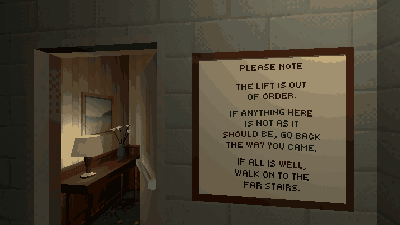

Tutorials › Make a Hallway That Loops for an Anomaly Game
How to Make a Hallway That Loops for an Anomaly Game in Godot 4
One hallway between two stairwells built alike: walk on and you are in it again, a floor lower.

The loop of an anomaly game: one hallway between two stairwells built alike. A flight down either stairwell, out of sight of the hallway, the player is moved to the same place a storey back in the stairwell they came in by, with the same view and speed, so they walk down into the same hallway again. The script says which way they went, and counts a choice only after they have stood in the hallway.
Script: looping_hallway.gd (MIT) · Godot 4.3 or newer · its folder on GitHub
How to use it
- Build the hallway between two stairwells that look alike from inside, each a stack of the same storey,
storeymetres apart. - Put a Node3D marker in each at the same spot (the middle of its door, its +Z into the stairwell):
backin the one the player comes in by,onin the far one. The two only have to look alike, not stand alike. - Add
looping_hallway.gdto a Node in the level and setplayer,backandonin the Inspector.insideis the stairwell's floor in its marker's frame;cross_depthis how far below (or above) the hallway's floor the move happens. - Connect
chosen(went_on)to dress the next floor: in an anomaly game, going on is right when nothing was wrong, going back is right when something was.
What it needs
- A CharacterBody3D player, and two stairwells that look the same wherever the player can see during the move.
Try it free
The Liminal PSX Anomalies Free Sampler has the hotel floor, its two stairwells and the pack's full loop game with five anomalies, on a run of three floors (it also waits for both stairwell doors to shut, dresses each floor and writes the floor number on the sign and every door).
How it was tested
In Godot 4.3 and 4.7.2, on two markers that face different ways and a capsule player: going on down the far stairwell lands the player a storey up in the near one, at the same place, facing the same way and at the same speed in it, and says chosen(true); back down the near one says chosen(false); climbing moves them a storey down; a player who has not stood in the hallway, or is short of the depth, is not moved.
The code
extends Node
## How to Make a Hallway That Loops for an Anomaly Game in Godot 4
## Cordatix Godot 4 PSX tutorials, MIT licensed: https://github.com/GoldenSparrow-Dev/cordatix-godot-psx-tutorials
## The devlog: https://cordatix.itch.io/liminal-psx-anomalies/devlog/1729533/how-to-make-a-hallway-that-loops-for-an-anomaly-game-in-godot-4-liminal-psx-anomalies
## A hallway that loops: when the player is a flight down (or up) either stairwell, out of sight of the hallway,
## they are moved to the same place a storey back in the stairwell they came in by, so they walk down into the same
## hallway again. Build the two stairwells alike, their storeys `storey` metres apart; `back` and `on` mark the same
## spot in each (the middle of the stairwell's door, its +Z into the stairwell).
signal chosen(went_on: bool)
@export var player: CharacterBody3D
## A marker in the stairwell the player came in by, and the same spot in the far one.
@export var back: Node3D
@export var on: Node3D
## The height between two storeys, and how far below (or above) the hallway's floor the move happens.
@export var storey := 4.0
@export var cross_depth := 1.75
## The inside of a stairwell in its marker's frame (x, z).
@export var inside := Rect2(-1.9, 0.1, 3.8, 5.8)
var armed := false # only a player who has stood in the hallway can choose
func _physics_process(_delta: float) -> void:
if player == null:
return
if not armed and _in_hallway(player.global_position):
armed = true
if not armed:
return
for s in [back, on]:
var p: Vector3 = s.global_transform.affine_inverse() * player.global_position
if inside.has_point(Vector2(p.x, p.z)) and absf(p.y) >= cross_depth:
_move(s, p.y < 0.0)
return
func _in_hallway(at: Vector3) -> bool:
for s in [back, on]:
var p: Vector3 = s.global_transform.affine_inverse() * at
if inside.has_point(Vector2(p.x, p.z)) or absf(p.y) > 0.5:
return false
return true
## The move: from the stairwell s to the same place in `back`, a storey up (down, if they climbed). The player keeps
## their place in the stairwell, their view and their speed.
func _move(s: Node3D, down: bool) -> void:
var lift := Transform3D(Basis(), Vector3(0.0, storey if down else -storey, 0.0))
var t := back.global_transform * lift * s.global_transform.affine_inverse()
player.global_transform = t * player.global_transform
player.velocity = t.basis * player.velocity
player.reset_physics_interpolation()
armed = false
chosen.emit(s == on)
The devlog and the pack
The step-by-step walkthrough is the devlog How to Make a Hallway That Loops for an Anomaly Game in Godot 4 (Liminal PSX Anomalies) on itch.io, written for Liminal PSX Anomalies, a PS1-style asset pack by Cordatix for Godot 4, Unity, Unreal and Blender.